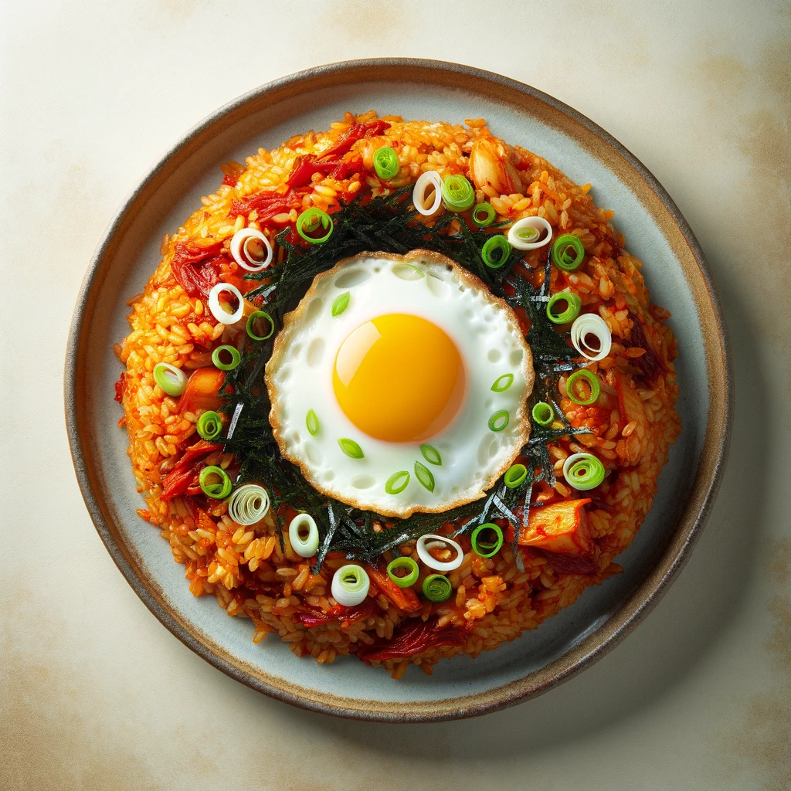

Recipes
Double Chocolate Cookies
Origin: Michigan
Source: Family Recipe
Category: Dessert

My daughter learned to make these cookies at a baking camp at Zingermanns and has tweaked the recipe to fit the taste buds of her siblings. They are extremely sugary so the salt helps to balance it. Note, these cookies are best eaten very quickly.
Recipe Ingredients:
- unsalted butter
- granulated sugar
- light brown sugar
- eggs
- vanilla extract
- all-purpose flour
- cocoa powder
- baking soda
- salt
- semi-sweet choclate chunks
Recipe Steps:
- In a mixing bowl cream together the butter, granulated sugar, and brown sugar
- Add the eggs and vanilla extract and mix until combined
- Add melted choclate
- In a separate bowl, whisk together the flour, cocoa powder, baking soda, cocoa powder and salt
- Combine the wet and dry ingredients
- Add the unmelted choclate chunks
- Form 15 cookies and place on a baking sheet
- Cook for 12 to 13 minutes at 350 degrees


Kimchi Fried Rice
Origin: Korean
Source: Own Recipe
Category: Main Dish
Kimchi fried rice is a staple in Korean cuisine. It's simple yet carries varieties of rich flavor, which is why it's beloved by the nation. I've developed my own method of creating the best version after multiple experiments during my years of living alone.
Recipe Ingredients:
- rice
- kimchi
- green onion
- egg
- oil
- gochujang paste
- minced garlic
- seseme oil
- canned tuna
- seaweed
Recipe Steps:
- Heat up a pan and add oil
- Add kimchi and minced garlic
- Add rice, gochujang paste, and tuna. Mix the ingredients together until the rice is fully cooked
- Add seseme oil and mix
- Then, leave a hole in the middle and crack the egg in the spot
- Remove from heat and top it off with chopped green onion and seaweed
Korean instant ramen
Origin: Korean
Source: Own Recipe
Category: Main Dish
Korean instant ramen has constantly been a popular Korean dish among generations. It's recognized as one of our favorite guilty pleasure foods, as most Koreans had limits on their ramen consumption when growing up since it's not necessarily "healthy."
Recipe Ingredients:
- noodles
- flavoring powder
- packet of vegetable flakes
- kimchi
- dumplings
Recipe Steps:
- Add 450ml to a pot and and heat it up
- When the water starts boiling, add the powder, flakes, kimchi, and dumplings
- When the dumplings are half-way cooked, add the noodles
- Remove from heat and eat